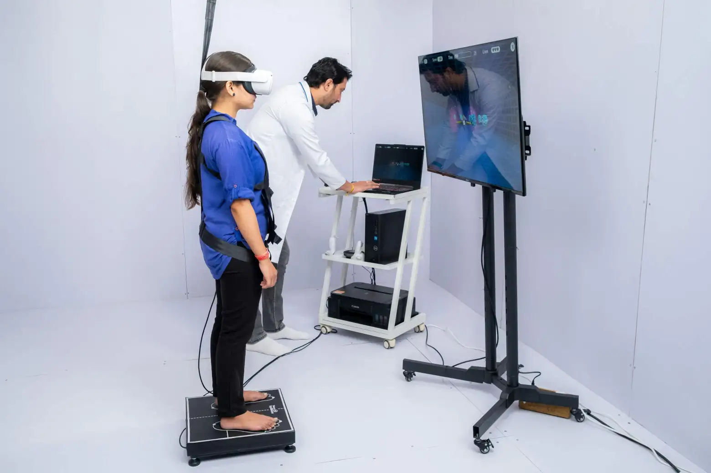
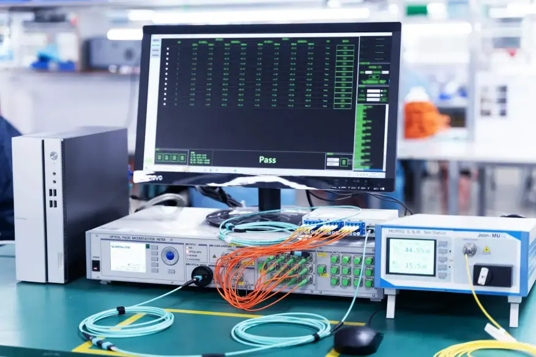

Founded by clinical pioneers and machine learning researchers, Pulse Health builds hospital-grade AI infrastructure that eradicates clinical burnout, optimizes diagnostic speed, and accelerates patient recovery worldwide.

"Our mandate is uncompromising: to provide every doctor with an ambient AI copilot that synthesizes vitals, eliminates charting exhaustion, and saves human lives."
Bridging complex clinical workflows with human-centered artificial intelligence to empower doctors and save patient lives.

To eliminate clinical documentation burnout and deliver automated, diagnostic-grade machine intelligence directly to physicians, nurses, and hospital care teams.
A connected world where every patient encounter is backed by real-time predictive diagnostics, seamless EHR interoperability, and instantaneous specialist access.
Technology should never stand between a doctor and a patient. Our ambient AI works invisibly in the background so clinicians can focus on what matters most: human healing.
Five years of rigorous clinical trials, hospital deployments, and breakthrough advances in neural health informatics.
Founded by Stanford clinical fellows to develop ambient machine intelligence algorithms that parse complex multi-lead ECGs and EHR notes.

Awarded clinical breakthrough designation for our predictive sepsis triage algorithm, deploying across our first 100 enterprise hospital ICUs.

Launched continuous multi-modal telemetry streaming, connecting hospital monitors, digital pharmacies, and bedside diagnostics in under 12ms latency.

Serving over 1.8 million patients across 34 countries with certified SOC-2, HIPAA, and FHIR interoperability pipelines.

Six core tenets driving our clinical engineering, patient safety, and ethical AI stewardship.

Every diagnostic model is trained against double-blind peer-reviewed medical datasets and audited by practicing board-certified clinicians.

We eliminate screen fatigue. Our automated voice scribing documents consultations seamlessly in real time without clicking buttons.

Zero-knowledge 256-bit encryption protects all patient telemetry. We never sell, compromise, or train open models on private PHI data.
Connecting specialized tertiary medical expertise with rural clinics and underserved communities through low-bandwidth telemetry.
Real-time algorithmic bias monitoring and clinical accuracy tracking across diverse demographic cohorts to guarantee ethical treatment.

Preserving patient dignity and empowering human doctors to maintain genuine eye contact and empathy throughout clinical examinations.
Every diagnostic model is trained against double-blind peer-reviewed medical datasets and audited by practicing board-certified clinicians.
We eliminate screen fatigue. Our automated voice scribing documents consultations seamlessly in real time without clicking buttons.
Zero-knowledge 256-bit encryption protects all patient telemetry. We never sell, compromise, or train open models on private PHI data.
Connecting specialized tertiary medical expertise with rural clinics and underserved communities through low-bandwidth telemetry.
Real-time algorithmic bias monitoring and clinical accuracy tracking across diverse demographic cohorts to guarantee ethical treatment.
Preserving patient dignity and empowering human doctors to maintain genuine eye contact and empathy throughout clinical examinations.
Combining decades of bedside clinical care with frontier deep learning expertise.
CEO & Co-Founder
Former Chief of Cardiology at Johns Hopkins with 18+ years of clinical practice and health informatics leadership.
 CMO & Clinical Lead
CMO & Clinical Lead
Pioneer in emergency medicine and automated ICU risk stratification; published 40+ clinical AI research papers.
 Chief Technology Officer
Chief Technology Officer
Ex-Google Brain infrastructure architect specializing in ultra-low latency distributed health data streaming and FHIR pipelines.
 Head of Neural AI
Head of Neural AI
MIT bio-informatics specialist leading our neural diagnostic networks and multi-modal predictive algorithms.
 VP Clinical Research
VP Clinical Research
Leading multi-center clinical validation across 60+ university hospitals for algorithm safety and zero diagnostic drift.
 Head of Inpatient Care
Head of Inpatient Care
Critical care intensivist dedicated to designing zero-latency emergency triage dashboards and vitals telemetry monitors.
CEO & Co-Founder
Former Chief of Cardiology at Johns Hopkins with 18+ years of clinical practice and health informatics leadership.
CMO & Clinical Lead
Pioneer in emergency medicine and automated ICU risk stratification; published 40+ clinical AI research papers.
Chief Technology Officer
Ex-Google Brain infrastructure architect specializing in ultra-low latency distributed health data streaming and FHIR pipelines.
Head of Neural AI
MIT bio-informatics specialist leading our neural diagnostic networks and multi-modal predictive algorithms.
VP Clinical Research
Leading multi-center clinical validation across 60+ university hospitals for algorithm safety and zero diagnostic drift.
Head of Inpatient Care
Critical care intensivist dedicated to designing zero-latency emergency triage dashboards and vitals telemetry monitors.
A four-tier decentralized architecture engineered for zero-latency medical triage and continuous patient monitoring.
Continuous ingest from bedside monitors, wearables, 12-lead ECGs, and lab feeds via high-throughput HL7/FHIR v4 streams.
Conversational speech-to-text models that extract symptoms, medication dosages, and ICD-10 coding directly into the electronic chart.
Neural inference clusters that forecast critical vital deterioration and sepsis risks up to 6 hours before clinical symptoms manifest.
Direct integration into doctor tablets, surgical consoles, and pharmacy networks for instant 1-click clinical orders.
Real-world clinical data from across our hospital network partners.
Built to satisfy the highest regulatory, clinical safety, and data sovereignty standards worldwide.
Full end-to-end BAA compliance guaranteeing patient health information encryption at rest and in transit.
Independently audited data security controls, availability safeguards, and continuous vulnerability penetration tests.
Software as a Medical Device algorithmic transparency aligned with FDA Good Machine Learning Practice (GMLP).
International standard data governance with complete patient sovereignty and localized regional cloud tenancy.
Schedule a private 1-on-1 technical walk-through with our medical informatics specialists and see our real-time AI operating system in action.